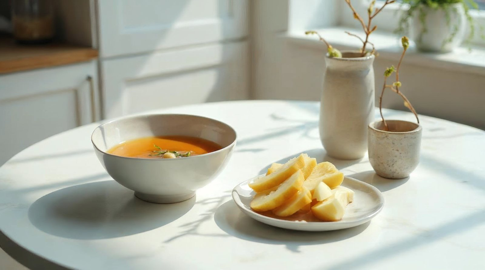
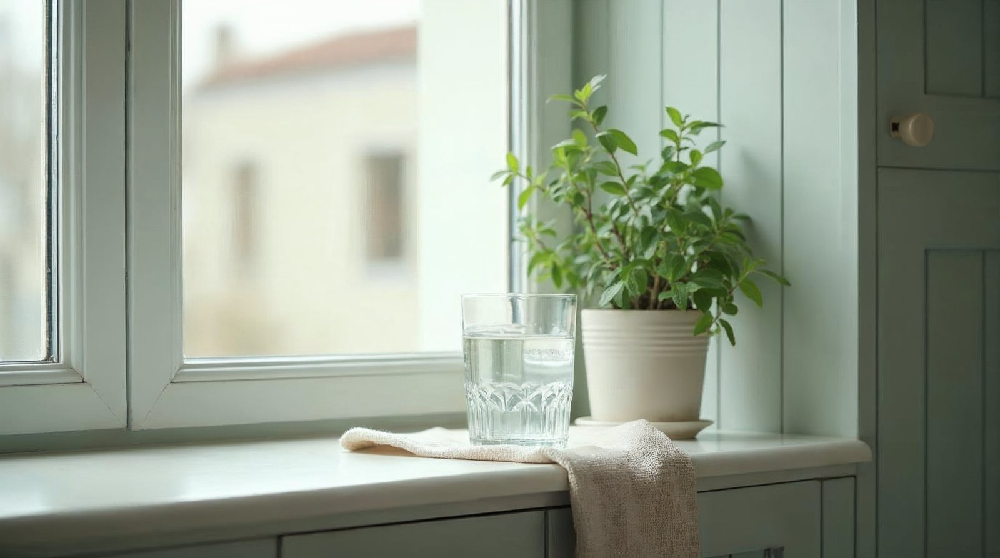

이종호 한의사 감수좋은꿈참사랑한의원 대표원장 (한의사 면허번호 19769)발행 2026-11-22 · 수정 2026-11-27
이 글의 차례
- 왜 폭식 충동이 생길 수 있나요
- 단순한 과식과 폭식 충동은 어떻게 다른가요?
- 어떤 상황에서 충동이 잘 생기나요?
- 혼자 점검해 볼 수 있는 목록
- 다이어트와 폭식은 어떻게 얽혀 있나요?
- 몰아 먹은 뒤의 속은 어떻게 달래나요?
- 주말과 휴일에 더 심해진다면
- 먼저 이렇게 여쭙니다
- 일상에서 먼저 해 볼 수 있는 것
- 충동이 올 때 집에서 해 볼 수 있는 순서
- 왜 굶을수록 더 몰아 먹게 될까요?
- 자주 하는 오해 몇 가지
- 한의원에서 함께 살필 수 있는 경우
- 처음 오시면 어떤 순서로 살피나요?
- 하루 식사 간격, 이렇게 짜 보세요
- 잠과 폭식은 어떻게 이어져 있나요?
- 먹는 것 말고 긴장을 푸는 방법도 마련해 두세요
- 이렇게 기록해 오시면 상담이 쉬워집니다
- 기록은 이렇게 해 보세요
- 가까운 사람이 도울 수 있는 것
- 이런 증상은 먼저 확인이 필요합니다
폭식 충동이 올 때는 그 직전에 얼마나 굶었는지, 잠과 스트레스는 어땠는지부터 살펴보세요. 참다가 한꺼번에 먹고 나서 자책하는 일이 반복되는 분이 많은데, 폭식은 하루 이틀의 의지로 끊기보다 그 앞뒤의 흐름을 보는 편이 도움이 됩니다. 먹은 뒤 토하거나 우울감이 깊다면 혼자 해결하려 하지 말고 진료를 받는 것이 우선입니다.
저는 진료실에서 폭식 이야기를 꺼내시는 분들이 대개 한참 망설이다 말씀하신다는 것을 자주 느낍니다. 부끄럽다는 마음 때문인데, 폭식은 생각보다 흔히 겪는 일이고 숨길수록 혼자 감당할 몫이 커집니다.
이 글에서는 폭식 충동이 어떤 흐름으로 찾아오는지, 집에서 무엇부터 바꿔 볼 수 있는지, 처음 오시면 무엇을 여쭙는지 차례로 정리해 보겠습니다.
왜 폭식 충동이 생길 수 있나요
- 오래 굶거나 식사를 건너뛰면 몸이 허기를 크게 느껴 다음 식사에서 조절이 어려워질 수 있습니다.
- 잠이 부족하면 식욕이 커지고 단 음식이 더 당기는 경향이 있는 것으로 알려져 있습니다.
- 스트레스와 지루함, 외로움을 먹는 것으로 달래는 습관이 생기기도 합니다.
- "오늘은 망했다"는 생각과 자책이 다음 폭식을 부르는 고리가 되기도 합니다.
단순한 과식과 폭식 충동은 어떻게 다른가요?
회식이나 명절에 평소보다 많이 먹는 것은 누구에게나 있는 일입니다. 이런 과식은 상황이 끝나면 대개 원래 식사로 돌아오고, 먹는 동안에도 스스로 멈출 수 있다는 느낌이 남아 있습니다.
폭식 충동은 조금 다릅니다. 배가 고프지 않은데도 먹기 시작하고, 먹는 속도가 빨라지며, 배가 아플 만큼 차야 멈추는 경우가 많습니다. 먹고 나면 맛보다 후회가 먼저 기억에 남는다고 말씀하시는 분도 있습니다.
또 하나 구별할 것은 몸이 정말 에너지를 필요로 하는 허기입니다. 아침과 점심을 거의 거른 채 저녁에 많이 먹는 것은 의지가 약해서라기보다 하루치 부족분을 한꺼번에 채우려는 반응에 가깝습니다. 이때는 낮 식사를 먼저 채우는 것이 출발점입니다.
어떤 상황에서 충동이 잘 생기나요?
예를 들어 다이어트를 한다며 점심을 샐러드 몇 조각으로 넘긴 경우, 퇴근길 편의점 앞에서 갑자기 손이 바빠지기 쉽습니다. 낮에 참은 만큼 저녁에 보상받고 싶은 마음이 함께 움직입니다.
예를 들어 하루 종일 긴장하는 일을 하고 밤늦게 혼자 집에 돌아온 경우에도 그렇습니다. 씻기도 전에 냉장고 문을 열고 서서 먹게 되는 장면은 피로와 외로움이 겹친 결과일 때가 많습니다.
예를 들어 시험이나 마감을 앞두고 잠을 줄인 주에는 단 음식과 과자가 유독 당긴다고들 하십니다. 잠이 부족한 날은 배부름을 느끼는 감각도 무뎌져, 같은 양을 먹어도 덜 찬 느낌이 들 수 있습니다.
혼자 점검해 볼 수 있는 목록
아래 항목 가운데 몇 개가 자주 해당하는지 체크해 보세요. 진단이 아니라 내 흐름을 알아보는 용도입니다.
- 배가 고프지 않은데도 먹기 시작하는 날이 있다
- 먹기 시작하면 멈추기 어렵고 속도가 빨라진다
- 남이 볼 때는 적게 먹고 혼자 있을 때 몰아서 먹는다
- 먹고 나면 '내일부터 굶어야지' 하고 다짐한다
- 그 다짐 뒤 며칠 안에 다시 몰아서 먹는다
- 몰아 먹은 날 전후로 잠이 짧거나 늦게 잠든다
세 개 이상이 자주 해당한다면 굶고 몰아 먹는 고리가 이미 만들어졌을 수 있습니다. 이 고리는 의지보다 식사 간격을 고르게 하는 데서 풀리기 시작하는 경우가 많습니다.
다이어트와 폭식은 어떻게 얽혀 있나요?
폭식으로 고민하시는 분들께 지난 몇 달의 식사를 여쭈면, 그 앞에 굶거나 아주 적게 먹는 다이어트가 있었던 경우가 많습니다. 줄인 만큼 몸은 허기를 키우고, 어느 순간 둑이 터지듯 몰아서 먹게 됩니다.
그래서 저는 폭식이 있는 분께 당장 양을 크게 줄이기보다 먼저 세 끼를 고르게 먹는 것부터 권합니다. 체중이 걱정되시더라도 식사가 안정된 뒤에 조금씩 조정하는 순서가 몸과 마음에 덜 무겁습니다.
'먹어도 되는 음식'과 '먹으면 안 되는 음식'을 너무 엄격하게 나누는 것도 다시 살펴볼 만합니다. 좋아하는 음식을 정해진 양만큼 가끔 즐기는 쪽이 금지했다가 몰아 먹는 것보다 오래 이어 가기 쉽습니다.
몰아 먹은 뒤의 속은 어떻게 달래나요?
많이 먹은 뒤에는 바로 눕지 말고 앉아서 쉬거나 집 안을 천천히 거닐어 보세요. 따뜻한 물이나 보리차를 조금씩 마시면 속이 덜 답답하다는 분이 많습니다.
다음 끼니는 거르지 말고 양을 조금 줄여 소화가 편한 음식으로 드세요. 죽이나 맑은 국, 부드러운 반찬처럼 속에 부담이 적은 것들이 좋습니다.
주말과 휴일에 더 심해진다면
평일에는 일정이 정해져 있어 그럭저럭 버티다가, 주말에 늦잠을 자고 끼니가 흐트러지면서 몰아 먹게 된다는 분이 많습니다. 휴일에도 기상 시각과 첫 끼니 시각을 평일과 한두 시간 안에서 맞춰 보세요.
집에 혼자 오래 있는 날은 미리 짧은 외출 계획을 하나 잡아 두는 것도 도움이 됩니다. 장보기나 산책처럼 작은 일정이라도 있으면 하루가 덜 비어 보이고, 냉장고 앞을 서성이는 시간이 줄어듭니다.

먼저 이렇게 여쭙니다
- 폭식은 하루 중 언제, 어떤 상황 뒤에 오나요?
- 그 전에 오래 굶거나 식사를 건너뛰었나요?
- 잠을 못 잤거나 스트레스가 심했던 날인가요?
- 먹는 동안과 먹고 난 뒤 기분이 어떤가요?
- 먹은 뒤 일부러 토하거나 약을 쓴 적이 있나요?
일상에서 먼저 해 볼 수 있는 것
- 하루 세 끼를 큰 간격 없이 규칙적으로 먹기
- 충동이 올 때 물 한 잔을 마시고 10분만 자리를 옮겨 보기
- 먹은 시각과 기분을 평가 없이 메모해 패턴 찾기
- 집에 쟁여 두는 간식의 양을 줄이고 눈에 띄지 않는 곳에 두기
- 잠자는 시각을 일정하게 지키기
충동이 올 때 집에서 해 볼 수 있는 순서
충동이 왔을 때 '절대 먹지 말자'고 버티면 오히려 생각이 음식에 붙잡히기 쉽습니다. 저는 막기보다 속도를 늦추는 순서를 권합니다.
먼저 지금 배가 실제로 고픈지 0부터 10까지 숫자로 매겨 보세요. 마지막으로 먹은 지 다섯 시간이 넘었다면 몸의 허기일 가능성이 크니, 제대로 된 한 끼를 차려 드시는 것이 좋습니다.
배고픔이 크지 않은데 먹고 싶다면, 먹을 것을 그릇에 덜어 식탁에 앉아서 드세요. 봉지째 들고 서서 먹거나 화면을 보며 먹으면 양을 가늠하기 어렵습니다.
그다음에는 먹기 전의 기분을 한 단어로 적어 봅니다. 지루함, 서운함, 피곤함처럼 이름을 붙이면 먹는 것 말고 다른 방법이 떠오르기도 합니다. 샤워, 짧은 산책, 누군가에게 메시지 보내기 같은 것들입니다.
몰아서 먹었더라도 다음 끼니를 거르지 마세요. 평소처럼 아침을 먹는 것이 다음 폭식을 막는 가장 현실적인 방법입니다. 굶어서 만회하려는 계획이 다시 고리를 돌리기 때문입니다.
왜 굶을수록 더 몰아 먹게 될까요?
몸은 오래 먹지 못하면 다음에 들어오는 음식을 놓치지 않으려고 허기 신호를 크게 키웁니다. 이때는 머리로 '조금만 먹자'고 정해도 손이 먼저 움직이기 쉽습니다. 의지가 약해서가 아니라 몸이 그렇게 반응하도록 되어 있는 셈입니다.
여기에 '먹으면 안 된다'는 금지가 더해지면 음식 생각이 오히려 더 자주 떠오릅니다. 금지한 음식일수록 한 번 손을 대면 '어차피 망쳤다'는 마음이 들어 끝까지 먹게 되는 흐름이 생깁니다.
한의학에서는 이런 모습을 비위의 기운과 마음의 긴장이 함께 흔들린 상태로 보기도 합니다. 끼니가 들쭉날쭉하면 소화하는 힘이 지치고, 긴장이 쌓이면 먹는 것으로 풀려는 쪽으로 기울기 쉽다고 봅니다.
자주 하는 오해 몇 가지
'저녁을 굶으면 살이 빠지니 폭식도 줄겠지'라고 생각하시는 분이 많습니다. 실제로는 저녁을 거른 날 밤늦게 냉장고 앞에 서게 되는 경우가 흔합니다. 양을 줄이더라도 저녁은 드시기를 권합니다.
'폭식은 단 음식 때문'이라고만 보는 것도 오해입니다. 단 것이 당기는 것은 결과일 때가 많고, 그 앞에는 굶은 시간과 부족한 잠, 쌓인 긴장이 있습니다. 단 음식만 끊으면 다른 음식으로 옮겨 가기도 합니다.
'한 번 크게 먹었으니 오늘은 끝났다'는 생각도 내려놓으셨으면 합니다. 한 끼가 하루 전체를 정하지 않습니다. 다음 끼니를 평소처럼 먹는 것만으로도 흐름은 다시 돌아옵니다.

한의원에서 함께 살필 수 있는 경우
- 식사 간격이 들쭉날쭉해 과식과 거르기를 오가는 경우, 식사 리듬과 수면 시간을 함께 살핍니다.
- 스트레스가 쌓이면 먹는 것으로 푸는 경우, 긴장과 잠, 소화를 함께 살핍니다.
- 폭식 뒤 속이 더부룩하고 몸이 무거운 경우, 소화 상태와 활동량을 함께 살핍니다.
좋은꿈참사랑한의원에서는 폭식이 오는 시간대와 그 앞뒤의 하루를 먼저 충분히 듣고, 진맥을 기본으로 하고 필요하다고 판단될 때 인바디 770으로 체성분을 확인하며 설진으로 소화와 긴장 상태를 살핍니다. 상태에 맞춰 침이나 한약 상담 등을 정합니다.
처음 오시면 어떤 순서로 살피나요?
첫 방문에서는 폭식이 언제 시작됐는지보다 지금의 하루가 어떻게 흘러가는지를 먼저 여쭙니다. 기상 시각, 첫 끼니 시각, 일하는 시간, 잠드는 시각을 한 줄로 그려 보면 굶는 구간이 어디인지 드러납니다.
진맥은 모든 분께 기본으로 하고, 혀의 색과 모양을 보는 설진, 배를 눌러 보는 복진으로 소화와 긴장 상태를 살핍니다. 체중 변화가 크거나 근육과 체지방의 비율이 궁금하시면, 필요하다고 판단될 때 인바디 770으로 체성분을 확인합니다.
이야기를 나누다 자책이 크다는 것이 보이면 그 부분도 함께 다룹니다. 폭식은 몸과 마음이 같이 움직이는 일이라 어느 한쪽만 고치려 하면 오래가기 어렵습니다. 드시는 약이 있다면 한약 상담 전에 먼저 확인합니다.
하루 식사 간격, 이렇게 짜 보세요
폭식이 잦은 분께 제가 가장 먼저 권하는 것은 네다섯 시간 안팎의 식사 간격입니다. 예를 들어 아침 8시, 점심 12시 반, 오후 4시 간단한 간식, 저녁 7시처럼 하루를 나누면 긴 공복 구간이 사라집니다.
간식은 폭식을 부르는 것이 아니라 막는 장치로 쓰시면 됩니다. 우유나 두유, 삶은 달걀, 과일 한 조각처럼 양이 정해진 것을 정해진 시간에 드시면 저녁 무렵의 큰 허기가 줄어듭니다.
아침을 먹으면 오히려 하루 종일 배가 고프다는 분도 있습니다. 처음 며칠은 그렇게 느낄 수 있지만, 몸이 규칙적인 식사에 익숙해지면 허기의 파도가 잔잔해지는 경우가 많습니다.
잠과 폭식은 어떻게 이어져 있나요?
잠이 모자란 날은 식욕을 조절하는 몸의 신호가 흐트러져 배고픔은 커지고 배부름은 늦게 느껴진다고 알려져 있습니다. 그래서 늦게 잔 다음 날 오후와 저녁에 충동이 몰리는 분이 많습니다.
밤늦게 깨어 있는 시간이 길수록 먹을 기회도 늘어납니다. 피곤한데 잠들지 못하고 화면을 보다 보면 손이 자연스럽게 간식으로 갑니다.
그래서 저는 폭식을 이야기할 때 잠자는 시각을 함께 정합니다. 매일 같은 시각에 잠자리에 드는 것, 잠들기 한 시간 전에는 화면을 내려놓는 것부터 해 보시길 권합니다.
먹는 것 말고 긴장을 푸는 방법도 마련해 두세요
먹는 것은 가장 빠르고 쉬운 위로라서 다른 방법이 떠오르지 않을 때 손이 가기 쉽습니다. 그래서 미리 목록을 만들어 두는 것이 도움이 됩니다.
예를 들어 따뜻한 물로 샤워하기, 좋아하는 노래 세 곡 듣기, 집 앞을 10분 걷기, 친구에게 짧은 메시지 보내기처럼 5분에서 10분 안에 할 수 있는 것들입니다.
이 목록을 냉장고 문이나 휴대전화 첫 화면에 붙여 두세요. 충동이 왔을 때 그중 하나를 먼저 해 보고, 그래도 먹고 싶다면 그릇에 덜어 앉아서 드시면 됩니다. 먹는 것을 금지하는 대신 순서를 바꾸는 방법입니다.
이렇게 기록해 오시면 상담이 쉬워집니다
- 폭식한 날짜와 시각, 그 전 마지막 식사 시각
- 그날의 잠과 스트레스 정도
- 먹은 뒤의 기분과 몸 상태
- 복용 중인 약(당뇨 약 등)과 건강식품
기록은 이렇게 해 보세요
기록은 길 필요가 없습니다. 휴대전화 메모에 한 줄씩, '시각 / 먹은 것 / 그 전 마지막 식사 / 기분'만 적어도 충분합니다. 예를 들어 '밤 11시 / 과자 두 봉지 / 점심 1시 / 피곤, 허전함'처럼요.
중요한 것은 평가하는 말을 빼는 것입니다. '또 망했다', '한심하다' 같은 말을 적으면 기록하는 일 자체가 괴로워져 오래가지 못합니다. 사실만 적고 해석은 진료실에서 함께 하면 됩니다.
일주일쯤 모으면 대개 비슷한 장면이 반복된다는 것이 보입니다. 특정 요일, 특정 시간, 특정 기분 뒤에 몰리는 경우가 많고, 그 장면 하나를 바꾸는 것이 첫 목표가 됩니다.
가까운 사람이 도울 수 있는 것
함께 사는 가족이 있다면 먹는 양을 지적하기보다 식사 시간을 함께 지켜 주는 쪽이 도움이 됩니다. 같이 앉아 밥을 먹는 시간이 있으면 혼자 몰아 먹는 일이 줄어든다는 분이 많습니다.
간식을 숨기거나 몰래 치우는 것은 오히려 긴장을 키울 수 있습니다. 집에 두는 양을 함께 정하고, 꺼내 먹을 때도 그릇에 덜어 먹자는 약속 정도가 부담이 적습니다.
무엇보다 몰아서 먹은 날 비난하지 않는 것이 중요합니다. '오늘 힘들었구나' 한마디가 다음 날 아침을 평소처럼 먹게 하는 힘이 되기도 합니다.
이런 증상은 먼저 확인이 필요합니다
- 일주일에 여러 번 통제하지 못하고 먹으며 일상이 힘든 경우
- 먹은 뒤 일부러 토하거나 설사약·이뇨제로 배출하는 경우
이런 신호가 있으면 한의원보다 가까운 병원이나 응급실을 먼저 찾으세요.

여쭙는 것
- 폭식은 하루 중 언제, 어떤 상황 뒤에 오나요?
- 그 전에 오래 굶거나 식사를 건너뛰었나요?
- 잠을 못 잤거나 스트레스가 심했던 날인가요?
생활에서 해 볼 것
- 하루 세 끼를 큰 간격 없이 규칙적으로 먹기
- 충동이 올 때 물 한 잔을 마시고 10분만 자리를 옮겨 보기
- 먹은 시각과 기분을 평가 없이 메모해 패턴 찾기
한의원에서 함께 살필 것
- 식사 간격이 들쭉날쭉해 과식과 거르기를 오가는 경우, 식사 리듬과 수면 시간을 함께…
- 스트레스가 쌓이면 먹는 것으로 푸는 경우, 긴장과 잠, 소화를 함께 살핍니다.
- 폭식 뒤 속이 더부룩하고 몸이 무거운 경우, 소화 상태와 활동량을 함께 살핍니다.
먼저 확인이 필요한 신호
- 일주일에 여러 번 통제하지 못하고 먹으며 일상이 힘든 경우
- 먹은 뒤 일부러 토하거나 설사약·이뇨제로 배출하는 경우
한눈에 보는 표
| 구분 | 핵심 |
|---|---|
| 여쭙는 것 | 폭식은 하루 중 언제, 어떤 상황 뒤에 오나요? 그 전에 오래 굶거나 식사를 건너뛰었나요? |
| 생활에서 해 볼 것 | 하루 세 끼를 큰 간격 없이 규칙적으로 먹기 충동이 올 때 물 한 잔을 마시고 10분만 자리를 옮겨 보기 |
| 한의원에서 함께 살필 것 | 식사 간격이 들쭉날쭉해 과식과 거르기를 오가는 경우, 식사 리듬과 수면 시간을 함께 살핍니다. 스트레스가 쌓이면 먹는 것으로 푸는 경우, 긴장과 잠, 소화를 함께 살핍니다. |
| 먼저 확인이 필요한 신호 | 일주일에 여러 번 통제하지 못하고 먹으며 일상이 힘든 경우 먹은 뒤 일부러 토하거나 설사약·이뇨제로 배출하는 경우 |
자주 묻는 질문
폭식은 한의원에서 어떻게 살피나요?
폭식이 오는 시간대, 앞선 식사와 잠, 스트레스, 소화 상태를 함께 여쭙고 생활 전체의 리듬 속에서 살핍니다.
한 끼를 아예 굶으면 폭식을 막을 수 있나요?
오래 굶으면 오히려 다음 식사에서 조절이 어려워질 수 있어 규칙적인 식사를 권합니다.
자책하는 마음은 어떻게 하나요?
자책은 폭식의 고리를 키울 수 있어, 먹은 사실은 기록하되 평가는 잠시 미뤄 두기를 권합니다.
밤에 특히 심해요.
저녁 식사 시각과 양, 잠드는 시각을 함께 기록해 오시면 어디서부터 조정할지 함께 정할 수 있습니다.
폭식한 다음 날은 어떻게 먹어야 하나요?
굶어서 만회하기보다 평소 시간에 평소 양의 아침을 드시기를 권합니다. 굶는 시간이 길어지면 다시 몰아 먹기 쉽습니다.
단 음식을 집에 아예 두지 않는 것이 좋을까요?
완전히 없애면 밖에서 몰아 사 먹는 분도 있어, 양을 줄이고 꺼내기 번거로운 곳에 두는 방법을 먼저 권합니다.
좋은꿈참사랑한의원은 재진 때 지난번 이야기부터 이어서 여쭙니다. 진료시간과 예약은 오시는 길에서 확인하세요.
어디서 상담받을 수 있나요?
좋은꿈참사랑한의원은 서울 동작구 만양로2길 2 신성빌딩 3층·5층(서울 동작구 상도동, 7호선 상도역 3번 출구 근처)에 있습니다. 한의사 3명(이종호 대표원장, 조영기 수석진료원장, 정원영 진료원장)이 진료합니다. 진료시간은 평일 09:30~20:00(점심 13:00~14:00), 토·일·공휴일 09:30~15:00이며, 방문 전 전화로 확인을 권합니다. 예약은 네이버 예약, 카카오톡 상담, 전화 02-815-7510로 받습니다.
이 글은 일반적인 건강 정보이며 개인의 진단이나 치료를 대신하지 않습니다. 증상이 있거나 복용 중인 약이 있다면 진료를 통해 확인하세요. 치료 효과는 개인마다 다를 수 있습니다.
작성 기준: 일반적으로 알려져 있는 건강 정보를 참고해 정리했습니다(대표원장 감수). 증상 기록은 1~2주 동안 하루 1회, 비슷한 시간에 적어 오시면 지난 상태와 비교하기 쉽습니다.